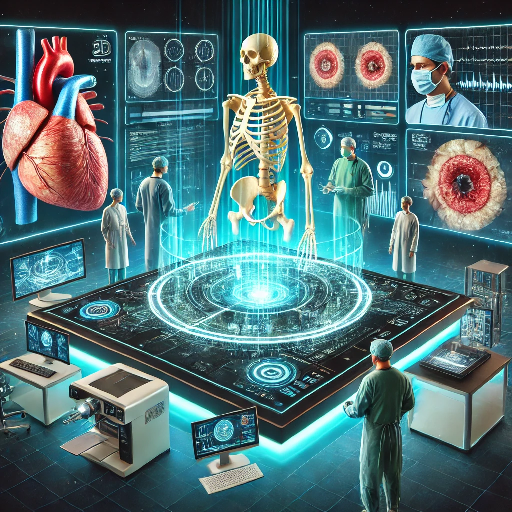
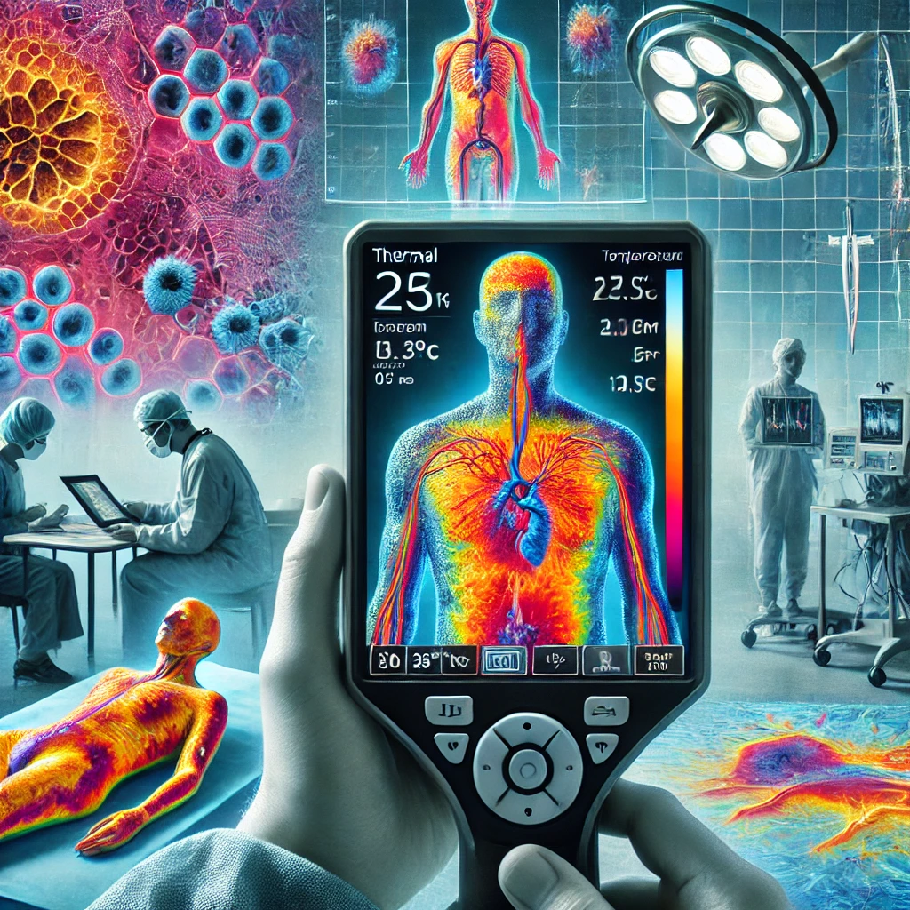
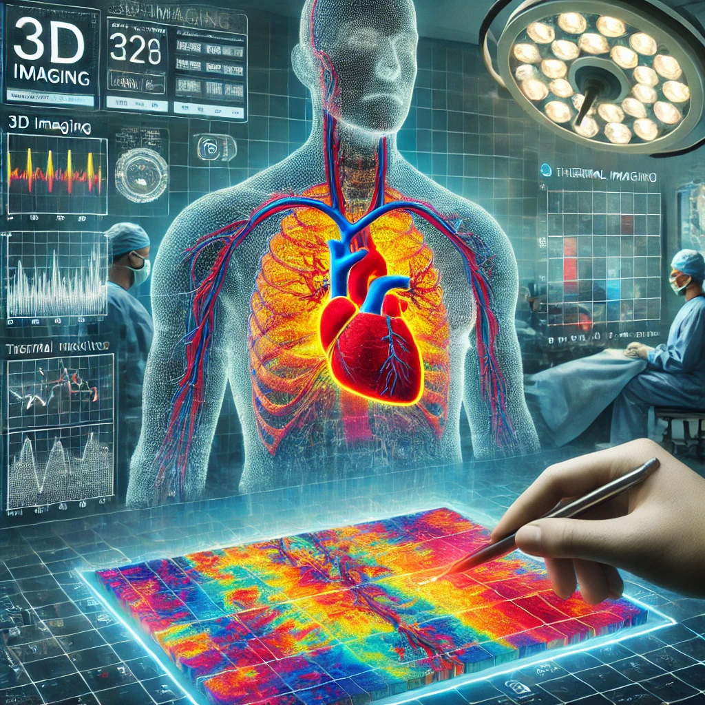

Transforming Healthcare with Technology and AI: A Continuous Era in Medicine
The role of 3D imaging
3D imaging is redefining healthcare by enabling surgeons to create precise anatomical models...
This technology is a cornerstone of modern medicine, ensuring better precision, safety, and outcomes.
A Closer Look at Thermal Imaging
Thermal imaging detects temperature variations in tissue...
A Complete Picture: Merging 3D & Thermal imaging

Model Wound Closures: Use 3D imaging to visualize how a wound might close over time...
Assess Limb Functionality: Analyze 3D scans of soft tissues and joints...
Overlay Thermal Imaging and Ultrasound Data: Combine thermal, 3D, and ultrasound info...
We want to create a tool that integrates 3D imaging and thermal imaging with AI...